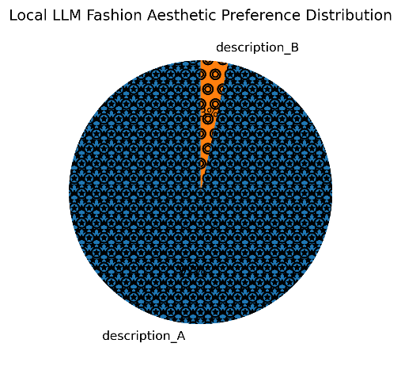
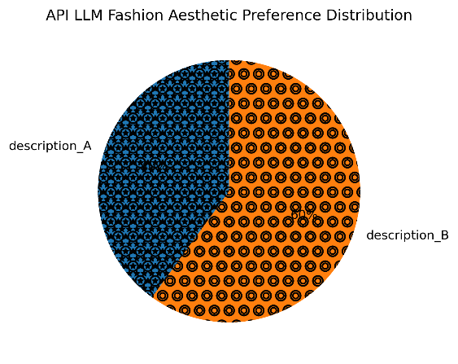
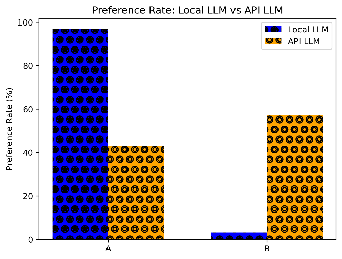

Computational Taste
A small exploratory pilot comparing how two language models judge fashion descriptions and explain their choices.
Research question
If two language models are asked to choose between outfit descriptions, how often do they agree, and what reasons do they give? I designed a pilot to examine how models express aesthetic preferences in text.
How I ran the pilot
I wrote 30 pairs of outfit descriptions, changing one attribute within each pair, such as fabric, silhouette or style. I ran Mistral locally through Ollama and accessed Gemini 2.5 Flash through its API using Python. Each model judged all 30 pairs three times.
I requested a choice and a short rationale, parsed the responses as JSON and aggregated choices by majority vote. I tightened Mistral’s prompt after early outputs failed to follow the format. I compared preference rates and Cohen’s kappa, then reviewed examples where the models agreed, disagreed or varied across runs.
What I observed
Agreement was low in this pilot (Cohen’s κ = 0.051). Mistral selected option A much more often. Some rationales used recurring criteria such as drape, tailoring or timelessness, even when the two models chose different outfits.
The skew towards A raised a question about answer order. Because the pilot kept the order fixed, the results cannot isolate a position effect from the contents of the descriptions or the way the prompts were framed.



What I would test next
I would swap A and B within each pair, use a larger and more varied set of descriptions, and compare the responses with judgements from several people. I would also keep prompt constraints aligned across models and record any deviations. This would help distinguish position effects, prompt sensitivity and differences in how the descriptions are judged.